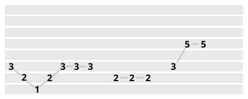
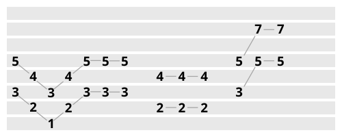
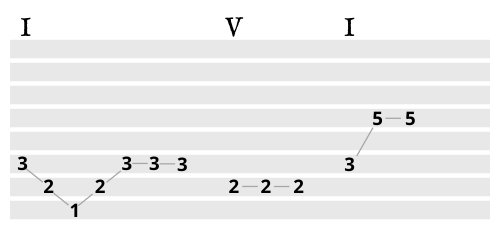
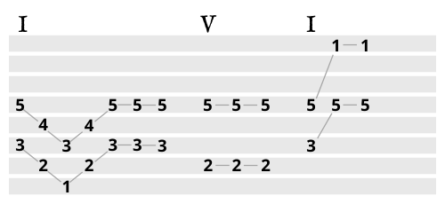
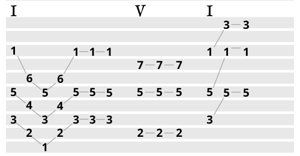

Harmonizing a Melody
Creating Two-Part Harmony
Imagine two singers singing a song in harmony. They are both singing the same words, using the same rhythms, but they are singing different notes. The notes create a nice harmony. This is a slightly different process from adding chords to a melody, and I’ll explain this using the example of Mary Had A Little Lamb. Here’s the melody, using the number system:
It might be helpful for you to try harmonizing with this before I explain how to do it. Some people, with a bit of practice, can get very good at this without knowing exactly how they do it. They sing something a little higher than the melody and they use their intuition to figure out how high to sing. Try this at home!
Now that you’ve tried it, I’ll explain it to you. The goal is to sing the same words and rhythms as the melody, but with different notes. The notes you choose will create a two-note chord. When we learned about chords, we saw that chords follow a “one, three, five” pattern. Chords are made up of thirds (the distance from one to three is a major third, and the distance from three to five is a minor third), so let’s try harmonizing the melody in thirds. To do this we just add a note a third above each note in the melody, staying on the major scale.
If you have a partner, try to sing this with them. Or, if you have a piano, try playing this on a major scale you know well. You might notice that it doesn’t sound perfect. For me, it doesn’t sound right at the end, when the harmony goes up to the seven. It also doesn’t sound right when there are three “two’s” in a row for “little lamb,” and the harmony is on three “four’s”. Even though it doesn’t quite sound right, adding a harmony in thirds like this is always a great place to start. Most of the song sounded good!
To figure out the parts that don’t sound right, we have to look at what chords we might be creating with these groups of two notes, and see if they match the chords we want the song to have. First, let’s add chords to the original melody, to see which chords sound “right.” (click here to learn how to add chords)
These are the chords that sound right to me. I started with the one-chord, then went to the five-chord for the second “little lamb,” then back to the one-chord for the final “little lamb.” In the key of C major, that would be C, then G, and back to C. You’ll notice that during the first chord, there are some notes that don’t fit with the chord. The “three” and the “one” fit with the chord, but the “two” doesn’t. In this case, as in many others, that’s okay because the “two” is not emphasized and it doesn’t last very long.
Now, to add a harmony part to this melody, you’ll sometimes use thirds, and sometimes use fourths, depending on how the harmony note fits with the chord. Below is how I would do this.
This sounds right to me. When we harmonized in thirds, the harmony went up to the seven at the end. Now that I know that I want a one-chord at the end, and I know that this chord doesn’t have a seven in it, I moved the “seven” up to a “one” in the harmony part, so now it fits with the chord. I did the same thing for the second “little lamb,” when the melody is on the two. I kept the first few notes the same even though some of them don’t fit with the chord, because the melody also doesn’t fit with the chord sometimes, and as we said earlier, that’s ok as long as those notes aren’t emphasized too much.
Creating Three-Part Harmony
Now that we’ve created a two-part harmony for “Mary Had a Little Lamb,” we can add a third part. To do this, we follow the same process, but instead of starting with a third above the melody, we’ll start with a fifth above the melody, which is a third above the harmony we’ve already made. Then, we can adjust the notes in this third melody to fit with the chords. For example, right at the beginning if we add a note a third above the “five” in the first harmony we made, we’ll have a “seven.” This doesn’t fit with the chord, so to make it fit we can move it up one note.
Another way of looking at this is that the two parts we already have are partial chords. Chords have three notes, so the third part will complete the chord. At the beginning, we have a one-chord, and the melody is on a three while the harmony is on a five. What note do we need to complete that chord? Below is a three-part harmony of “Mary Had a Little Lamb.”
This is how most three-part harmonies are created in popular music. The same basic principles apply when four- and five-part chords are used, it just gets a little more complicated. This may seem like a formulaic way to create music, and it is. The sound of simple three-part chords is undeniable, and there is a formula for how to create them. The art is usually in the writing of the original melody and choosing when to add harmony and when not to. Adding harmonies can get more creative if you want each harmony to be its own separate melody. You can have three-part songs where the different parts criss-cross each other, so they trade which part is on top. You can also get creative with different octaves. The original melody can be on the bottom, in the middle, or on the top, depending on which octave you put all the parts in. Rhythm is another important aspect of this that can open up a whole world of possibility. In the example above, each of the three parts has the same rhythm, but what if they didn’t?
Harmony Ear Training Exercise 4: Creating Two- and Three-Part Harmonies
Try harmonizing another melody. Nursery rhymes are always a good option, but you can try harmonizing any song. Before using the systematic approach I explained, you could start by using your intuition to find a harmony above or below the melody. Whether or not that works, try the method I’ve explained by adding chords, then adding a harmony that fits with the chords. You can compare the intuitive method and the systematic method to see which one works in different situations. Eventually, the systematic method can become so easy that it's basically intuitive.